space.relative
description::
· relative-space is space defined in relation to another space.
name::
* McsEngl.relative-space,
* McsEngl.space.relative,
====== langoSinago:
* McsSngo.do-tio!=space.relative,
====== langoGreek:
* McsElln.χώρος.σχετικός,
space.relative.across
description::

· space-across-space is space at right-angle in-relation-to another space.
_stxEngl: _stxSbj:[There] _stxVrb:{is} _stxSbjc:[a bridge] _stxSpace:[(across) the river].
_stxEngl: _stxSbj:[The red bar] _stxVrb:{is lying} _stxSpace:[(across) the blue boxes].
[https://www.englishpage.com/prepositions/position_prepositions.htm]
===
"(adv) transversely, transversally (in a transverse manner) "they were cut transversely""
[http://wordnetweb.princeton.edu/perl/webwn?s=transversely]
"(adj) crosswise (in the shape of (a horizontal piece on) a cross)"
"(adv) across, crosswise, crossways (transversely) "the marble slabs were cut across""
[http://wordnetweb.princeton.edu/perl/webwn?s=crosswise]
name::
* McsEngl.across-space,
* McsEngl.crosswise-space,
* McsEngl.space.across-space,
* McsEngl.across!~conjEngl:rlnSpaceAcross,
* McsEngl.syntax.across!~conjEngl:rlnSpaceAcross,
* McsEngl.syntax.conjEngl.across:rlnSpaceAcross,
* McsEngl.syntax.rlnSpaceAcross,
* McsEngl.rlnSpaceAcross,
* McsEngl.transversely-space,
====== langoSinago:
* McsSngo.do-crosa-do!=rlnSpaceAcross,
====== langoGreek:
* McsElln.εγκάρσιος!~adjvElln:-ος-α-ο,
space.relative.above
description::

_stxEngl: _stxSbj:[The red ball] _stxVrb:{is} _stxSpace:[(above) the blue box].
[https://www.englishpage.com/prepositions/position_prepositions.htm]
name::
* McsEngl.above-space,
* McsEngl.over-space,
* McsEngl.space.above-space,
* McsEngl.above!~conjEngl:rlnSpaceAbove,
* McsEngl.syntax.above!~conjEngl:rlnSpaceAbove,
* McsEngl.syntax.conjEngl.above:rlnSpaceAbove,
* McsEngl.rlnSpaceAbove,
* McsEngl.rlnSpaceAbove,
* McsEngl.space.over-space,
* McsEngl.syntax.over!~conjEngl:rlnSpaceAbove,
* McsEngl.syntax.rlnSpaceAbove,
* McsEngl.rlnSpaceAbove,
* McsEngl.space.over-space,
* McsEngl.syntax.over!~conjEngl:rlnSpaceAbove,
* McsEngl.syntax.conjEngl.over:rlnSpaceAbove,
space.relative.below
description::

_stxEngl: _stxSbj:[The red ball] _stxVrb:{is} _stxSpace:[(below) the blue box].
[https://www.englishpage.com/prepositions/position_prepositions.htm]
name::
* McsEngl.below-space,
* McsEngl.beneath-space,
* McsEngl.space.below-space,
* McsEngl.below!~conjEngl:rlnSpaceBelow,
* McsEngl.syntax.below!~conjEngl:rlnSpaceBelow,
* McsEngl.syntax.conjEngl.below:rlnSpaceBelow,
* McsEngl.rlnSpaceBelow,
* McsEngl.rlnSpaceBelow,
* McsEngl.space.beneath-space,
* McsEngl.syntax.beneath!~conjEngl:rlnSpaceBelow,
* McsEngl.syntax.rlnSpaceBelow,
* McsEngl.rlnSpaceBelow,
* McsEngl.space.beneath-space,
* McsEngl.syntax.beneath!~conjEngl:rlnSpaceBelow,
* McsEngl.syntax.conjEngl.beneath:rlnSpaceBelow,
space.relative.on
description::

_stxEngl: _stxSbj:[The red ball] _stxVrb:{is} _stxSpace:[(on) the blue box].
[https://www.englishpage.com/prepositions/position_prepositions.htm]
name::
* McsEngl.on-space,
* McsEngl.space.on-space,
* McsEngl.on!~conjEngl:rlnSpaceOn,
* McsEngl.syntax.on!~conjEngl:rlnSpaceOn,
* McsEngl.syntax.conjEngl.on:rlnSpaceOn,
* McsEngl.syntax.rlnSpaceOn,
* McsEngl.rlnSpaceOn,
space.relative.under
description::

_stxEngl: _stxSbj:[The red ball] _stxVrb:{is} _stxSpace:[(under) the blue box].
[https://www.englishpage.com/prepositions/position_prepositions.htm]
name::
* McsEngl.under-space,
* McsEngl.underneath-space,
* McsEngl.space.under-space,
* McsEngl.under!~conjEngl:rlnSpaceUnder,
* McsEngl.syntax.under!~conjEngl:rlnSpaceUnder,
* McsEngl.syntax.conjEngl.under:rlnSpaceUnder,
* McsEngl.rlnSpaceUnder,
* McsEngl.rlnSpaceUnder,
* McsEngl.space.underneath-space,
* McsEngl.syntax.underneath!~conjEngl:rlnSpaceUnder,
* McsEngl.syntax.rlnSpaceUnder,
* McsEngl.rlnSpaceUnder,
* McsEngl.space.underneath-space,
* McsEngl.syntax.underneath!~conjEngl:rlnSpaceUnder,
* McsEngl.syntax.conjEngl.underneath:rlnSpaceUnder,
space.relative.against
description::

_stxEngl: _stxSbj:[The red bar] _stxVrb:{is lying} _stxSpace:[(against) the blue box].
[https://www.englishpage.com/prepositions/position_prepositions.htm]
_stxEngl: _stxVrb:{threw} _stxObj:[him] _stxSpace:[(against) the wall].
name::
* McsEngl.against-space,
* McsEngl.space.against-space,
* McsEngl.against!~conjEngl:rlnSpaceAgainst,
* McsEngl.syntax.against!~conjEngl:rlnSpaceAgainst,
* McsEngl.syntax.conjEngl.against:rlnSpaceAgainst,
* McsEngl.syntax.rlnSpaceAgainst,
* McsEngl.rlnSpaceAgainst,
space.relative.opposite
description::
· in a-space on the-other side of a-specific-space.
_stxEngl: _stxSbj:[Their house] _stxVrb:{is} _stxSpace:[(opposite) the Red Cross Hospital].
_stxElla: _stxVrb:_stxVrb:{Ειστήκεσαν} _stxSpace:[(ἀντὶ) τῶν πιτύων]. ==> _stxVrb:{είχαν σταθεί} _stxSpace:[(απέναντι από) τα πεύκα].
name::
* McsEngl.opposite-space,
* McsEngl.space.opposite-space,
* McsEngl.space.conjElla.ἀντὶ:rlnSpaceOpposite,
* McsEngl.space.conjElln.απένταντι-από:rlnSpaceOpposite,
* McsEngl.space.conjEngl.opposite:rlnSpaceOpposite,
space.relative.among
description::

_stxEngl: _stxSbj:[The red ball] _stxVrb:{is} _stxSpace:[(among) the blue box].
[https://www.englishpage.com/prepositions/position_prepositions.htm]
name::
* McsEngl.among-space,
* McsEngl.space.among-space,
* McsEngl.among!~conjEngl:rlnSpaceAmong,
* McsEngl.syntax.among!~conjEngl:rlnSpaceAmong,
* McsEngl.syntax.conjEngl.among:rlnSpaceAmong,
* McsEngl.syntax.rlnSpaceAmong,
* McsEngl.rlnSpaceAmong,
space.relative.around
description::

_stxEngl: _stxSbj:[The red balls] _stxVrb:{are} _stxSpace:[(around) the blue box].
[https://www.englishpage.com/prepositions/position_prepositions.htm]
_stxEngl: _stxManner:[tenderly] _stxSbj:[she] _stxVrb:{placed} _stxObj:[her arms] _stxSpace:[(round) him]. [WordNet 2.0]
name::
* McsEngl.around-space,
* McsEngl.space.around-space,
* McsEngl.around!~conjEngl:rlnSpaceAround,
* McsEngl.syntax.around!~conjEngl:rlnSpaceAround,
* McsEngl.syntax.conjEngl.around:rlnSpaceAround,
* McsEngl.round!~conjEngl:rlnSpaceAround,
* McsEngl.syntax.round!~conjEngl:rlnSpaceAround,
* McsEngl.syntax.conjEngl.round:rlnSpaceAround,
* McsEngl.syntax.rlnSpaceAround,
* McsEngl.rlnSpaceAround,
space.relative.between
description::

_stxEngl: _stxSbj:[The red ball] _stxVrb:{is} _stxSpace:[(between) the blue boxes].
[https://www.englishpage.com/prepositions/position_prepositions.htm]
name::
* McsEngl.between-space,
* McsEngl.space.between-space,
* McsEngl.between!~conjEngl:rlnSpaceBetween,
* McsEngl.syntax.between!~conjEngl:rlnSpaceBetween,
* McsEngl.syntax.conjEngl.between:rlnSpaceBetween,
* McsEngl.syntax.rlnSpaceBetween,
* McsEngl.rlnSpaceBetween,
space.relative.behind
description::

_stxEngl: _stxSbj:[The red ball] _stxVrb:{is} _stxSpace:[(behind) the blue box].
[https://www.englishpage.com/prepositions/position_prepositions.htm]
name::
* McsEngl.behind-space,
* McsEngl.space.behind-space,
* McsEngl.behind!~conjEngl:rlnSpaceBehind,
* McsEngl.syntax.behind!~conjEngl:rlnSpaceBehind,
* McsEngl.syntax.conjEngl.behind:rlnSpaceBehind,
* McsEngl.syntax.rlnSpaceBehind,
* McsEngl.rlnSpaceBehind,
space.relative.in-front-of
description::

_stxEngl: _stxSbj:[The red ball] _stxVrb:{is} _stxSpace:[(in-front-of) the blue box].
[https://www.englishpage.com/prepositions/position_prepositions.htm]
_stxEngl: _stxSbj:[She] _stxVrb:{walked} _stxSpace:[[(ahead of) Helene] [(up) the steps] [(into) the hotel]]. [HarperCollins]
_stxZhon: [汽车(前边)] _stxVrb:{没有} [人]。 != in front of the car there is no man.
name::
* McsEngl.ahead-of-conjEngl:rlnSpaceAheadof,
* McsEngl.in-front-of-conjEngl:rlnSpaceAheadof,
* McsEngl.rlnSpaceAheadof,
* McsEngl.space.ahead-of--space,
* McsEngl.space.in-front-of-space,
* McsEngl.syntax.ahead-of-conjEngl:rlnSpaceAheadof,
* McsEngl.syntax.conjEngl.ahead-of:rlnSpaceAheadof,
* McsEngl.syntax.conjEngl.in-front-of:rlnSpaceAheadof,
* McsEngl.syntax.in-front-of-conjEngl:rlnSpaceAheadof,
* McsEngl.syntax.rlnSpaceAheadof,
space.relative.beside
description::

_stxEngl: _stxSbj:[The red ball] _stxVrb:{is} _stxSpace:[(beside) the blue box].
[https://www.englishpage.com/prepositions/position_prepositions.htm]
name::
* McsEngl.beside-space,
* McsEngl.next-to-space,
* McsEngl.space.beside-space,
* McsEngl.beside!~conjEngl:rlnSpaceBeside,
* McsEngl.syntax.beside!~conjEngl:rlnSpaceBeside,
* McsEngl.syntax.conjEngl.beside:rlnSpaceBeside,
* McsEngl.rlnSpaceBeside,
* McsEngl.rlnSpaceBeside,
* McsEngl.space.next-to-space,
* McsEngl.syntax.next-to-conjEngl:rlnSpaceBeside,
* McsEngl.syntax.rlnSpaceBeside,
* McsEngl.rlnSpaceBeside,
* McsEngl.space.next-to-space,
* McsEngl.syntax.next-to-conjEngl:rlnSpaceBeside,
* McsEngl.syntax.conjEngl.next-to:rlnSpaceBeside,
space.relative.beyond
description::

name::
* McsEngl.beyond-space,
* McsEngl.space.beyond-space,
* McsEngl.beyond!~conjEngl:rlnSpaceBeyond,
* McsEngl.syntax.beyond!~conjEngl:rlnSpaceBeyond,
* McsEngl.syntax.conjEngl.beyond:rlnSpaceBeyond,
* McsEngl.syntax.rlnSpaceBeyond,
* McsEngl.rlnSpaceBeyond,
====== langoGreek:
* McsElln.παραπέρα,
space.relative.near
description::

_stxEngl: _stxSbj:[The red ball] _stxVrb:{is} _stxSpace:[(near) the blue box].
[https://www.englishpage.com/prepositions/position_prepositions.htm]
_stxEngl: _stxSbj:[He] _stxVrb:{lives} _stxSpace:[(by) a train station].
name::
* McsEngl.by-space,
* McsEngl.near-space,
* McsEngl.space.by-space,
* McsEngl.space.near-space,
* McsEngl.by!~conjEngl:rlnSpaceNear,
* McsEngl.syntax.by!~conjEngl:rlnSpaceNear,
* McsEngl.syntax.conjEngl.by:rlnSpaceNear,
* McsEngl.near!~conjEngl:rlnSpaceNear,
* McsEngl.syntax.near!~conjEngl:rlnSpaceNear,
* McsEngl.syntax.conjEngl.near:rlnSpaceNear,
* McsEngl.syntax.rlnSpaceNear,
* McsEngl.rlnSpaceNear,
====== langoGreek:
* McsElln.κοντά-σε,
space.relative.far-from
description::

_stxEngl: _stxSbj:[The red ball] _stxVrb:{is} _stxSpace:[(far-away-from) the blue box].
_stxEngl: _stxSbj:[The Great Barrier Reef, _stxSpace:[(off) the northeast coast]], _stxVrb:{is renouned} _stxArg:[(for) skindiving, and big game fishing].
_stxEngl: _stxSbj:[I] _stxVrb:{happened} _stxObj:[upon the most wonderful bakery] _stxSpace:[not very [(far from) here]]. [WordNet 2.0]
name::
* McsEngl.far-away-from-space,
* McsEngl.space.far-away-from-space,
* McsEngl.far-away-from-conjEngl:rlnSpaceFar,
* McsEngl.syntax.far-away-from-conjEngl:rlnSpaceFar,
* McsEngl.syntax.conjEngl.far-away-from:rlnSpaceFar,
* McsEngl.far-from-conjEngl:rlnSpaceFar,
* McsEngl.syntax.far-from-conjEngl:rlnSpaceFar,
* McsEngl.syntax.conjEngl.far-from:rlnSpaceFar,
* McsEngl.off!~conjEngl:rlnSpaceFar,
* McsEngl.syntax.off!~conjEngl:rlnSpaceFar,
* McsEngl.syntax.conjEngl.off:rlnSpaceFar,
* McsEngl.syntax.rlnSpaceFar,
* McsEngl.rlnSpaceFar,
space.relative.inside
description::

_stxEngl: _stxSbj:[The red ball] _stxVrb:{is} _stxSpace:[(inside) the blue box].
[https://www.englishpage.com/prepositions/position_prepositions.htm]
_stxEngl: _stxSbj:[Clients] _stxVrb:{are entertained} _stxSpace:[(within) private dining rooms]. [HarperCollins]
name::
* McsEngl.inside-space,
* McsEngl.space.inside-space,
* McsEngl.inside!~conjEngl:rlnSpaceInside,
* McsEngl.syntax.inside!~conjEngl:rlnSpaceInside,
* McsEngl.syntax.conjEngl.inside:rlnSpaceInside,
* McsEngl.within!~conjEngl:rlnSpaceInside,
* McsEngl.syntax.within!~conjEngl:rlnSpaceInside,
* McsEngl.syntax.conjEngl.within:rlnSpaceInside,
* McsEngl.syntax.rlnSpaceInside,
* McsEngl.rlnSpaceInside,
====== langoSinago:
* McsSngo.do-esa-do!=space.inside-space,
space.relative.outside
description::

_stxEngl: _stxSbj:[The red ball] _stxVrb:{is} _stxSpace:[(outside) the blue box].
[https://www.englishpage.com/prepositions/position_prepositions.htm]
name::
* McsEngl.outside-space,
* McsEngl.space.outside-space,
* McsEngl.outside!~conjEngl:rlnSpaceOutside,
* McsEngl.syntax.outside!~conjEngl:rlnSpaceOutside,
* McsEngl.syntax.conjEngl.outside:rlnSpaceOutside,
* McsEngl.syntax.rlnSpaceOutside,
* McsEngl.rlnSpaceOutside,
====== langoSinago:
* McsSngo.do-eza-do!=rlnSpaceOutside,
space.relative.in
description::

_stxEngl: _stxSbj:[The red ball] _stxVrb:{is} _stxSpace:[(in) the blue box].
[https://www.englishpage.com/prepositions/position_prepositions.htm]
name::
* McsEngl.in-space,
* McsEngl.space.in-space,
* McsEngl.in!~conjEngl:rlnSpaceIn,
* McsEngl.syntax.in!~conjEngl:rlnSpaceIn,
* McsEngl.syntax.conjEngl.in:rlnSpaceIn,
* McsEngl.syntax.rlnSpaceIn,
* McsEngl.rlnSpaceIn,
space.relative.through
description::

_stxEngl: _stxSbj:[The red ball] _stxVrb:{is running} _stxSpace:[(through) the blue box].
[https://www.englishpage.com/prepositions/position_prepositions.htm]
name::
* McsEngl.through-space,
* McsEngl.space.through-space,
* McsEngl.through!~conjEngl:rlnSpaceThrough,
* McsEngl.syntax.through!~conjEngl:rlnSpaceThrough,
* McsEngl.syntax.conjEngl.through:rlnSpaceThrough,
* McsEngl.syntax.rlnSpaceThrough,
* McsEngl.rlnSpaceThrough,
space.relative.throughout
description::
· all over a-place.
_stxEngl: _stxSbj:[a musician] _stxVrb:{known} _stxSpace:[(throughout) the world]. [WordNet 2.0]
name::
* McsEngl.throughout-space,
* McsEngl.space.throughout-space,
* McsEngl.throughout!~conjEngl:rlnSpaceThroughout,
* McsEngl.syntax.throughout!~conjEngl:rlnSpaceThroughout,
* McsEngl.syntax.conjEngl.throughout:rlnSpaceThroughout,
* McsEngl.syntax.rlnSpaceThroughout,
* McsEngl.rlnSpaceThroughout,
space.relative.elsewhere
description::
· elsewhere is space different than the-space of context.
name::
* McsEngl.elsewhere-space,
* McsEngl.space.elsewhere,
* McsEngl.syntax.rlnSpaceElsewhere,
* McsEngl.rlnSpaceElsewhere,
=== langoGreek:
* McsElln.αλλού!~advb,
space.relative.left
description::
· left-space is space on the-left-hand of the-person in context.
name::
* McsEngl.left-space,
* McsEngl.space.left,
* McsEngl.syntax.rlnSpaceLeft,
* McsEngl.rlnSpaceLeft,
=== langoGreek:
* McsElln.αριστερά!~advb,
space.relative.right
description::
· right-space is space on the-right-hand of the-person in context.
name::
* McsEngl.right-space,
* McsEngl.space.right,
* McsEngl.syntax.rlnSpaceRight,
* McsEngl.rlnSpaceRight,
=== langoGreek:
* McsElln.δεξιά!~advb,
space.relative.east
description::
· east-space is definiteNo space relative to current-space and the-direction of the-sunrise.
name::
* McsEngl.east-space,
* McsEngl.space.relative.east,
* McsEngl.syntax.rlnSpaceEast,
* McsEngl.rlnSpaceEast,
space.relative.west
description::
· west-space is definiteNo space relative to current-space and the-direction of the-sunset.
name::
* McsEngl.space.relative.west,
* McsEngl.west-space,
* McsEngl.syntax.rlnSpaceWest,
* McsEngl.rlnSpaceWest,
space.relative.north
description::
· north-space is definiteNo space relative to current-space and the-direction left of the-sunrise.
name::
* McsEngl.north-space,
* McsEngl.space.relative.north,
* McsEngl.syntax.rlnSpaceNorth,
* McsEngl.rlnSpaceNorth,
space.relative.south
description::
· north-space is definiteNo space relative to current-space and the-direction right of the-sunrise.
name::
* McsEngl.south-space,
* McsEngl.space.relative.south,
* McsEngl.syntax.rlnSpaceSouth,
* McsEngl.rlnSpaceSouth,
space.relative.direction
description::
· space-direction is a-sequence of two spaces.
===
"(adj) oriented, orientated (adjusted or located in relation to surroundings or circumstances; sometimes used in combination) "the house had its large windows oriented toward the ocean view"; "helping freshmen become oriented to college life"; "the book is value-oriented throughout""
[http://wordnetweb.princeton.edu/perl/webwn?s=oriented]
name::
* McsEngl.space.relative.direction!⇒space-direction,
* McsEngl.space-direction.
relation of space-direction
description::
· space-direction-relation is the-relation between the-spaces of the-space-direction.
name::
* McsEngl.rlnDirection,
* McsEngl.space-direction'relation!⇒rlnDirection,
* McsEngl.space-direction-relation!⇒rlnDirection,
syntax of rlnDirection
description::
·
name::
* McsEngl._stxDirection,
* McsEngl.rlnDirection'syntax,
space-direction.SPECIFIC
description::
* left,
* right,
* up,
* down,
* forward,
* backward,
* leftward,
* rightward,
* upward,
* downward,
name::
* McsEngl.space-direction.specific,
space.relative.direction.across
description::

_stxEngl: _stxSbj:[The red ball] _stxVrb:{bounce} _stxDirection:[(across) the blue line].
[https://www.englishpage.com/prepositions/direction_prepositions.htm]
name::
* McsEngl.across-space-direction,
* McsEngl.space-direction.across,
* McsEngl.across!~conjEngl:rlnDirectionAcross,
* McsEngl.syntax.across!~conjEngl:rlnDirectionAcross,
* McsEngl.syntax.conjEngl.across:rlnDirectionAcross,
* McsEngl.syntax.rlnDirectionAcross,
* McsEngl.rlnDirectionAcross,
space.relative.direction.along
description::
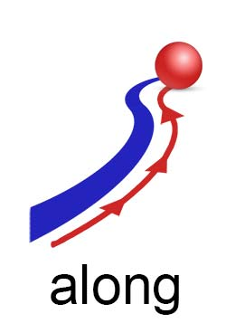
_stxEngl: _stxSbj:[The red ball] _stxVrb:{is rolling} _stxDirection:[(along) the blue line].
[https://www.englishpage.com/prepositions/direction_prepositions.htm]
name::
* McsEngl.along-space-direction,
* McsEngl.space-direction.along,
* McsEngl.along!~conjEngl:rlnDirectionAlong,
* McsEngl.syntax.along!~conjEngl:rlnDirectionAlong,
* McsEngl.syntax.conjEngl.along:rlnDirectionAlong,
* McsEngl.syntax.rlnDirectionAlong,
* McsEngl.rlnDirectionAlong,
space.relative.direction.from
description::
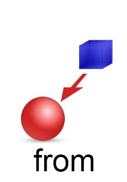
_stxEngl: _stxSbj:[The red ball] _stxVrb:{is coming} _stxDirection:[(from) the blue box].
[https://www.englishpage.com/prepositions/direction_prepositions.htm]
name::
* McsEngl.from!~conjEngl:rlnDirectionFrom,
* McsEngl.from-space-direction,
* McsEngl.rlnDirectionFrom,
* McsEngl.space-direction.from,
* McsEngl.syntax.from!~conjEngl:rlnDirectionFrom,
* McsEngl.syntax.conjEngl.from:rlnDirectionFrom,
* McsEngl.syntax.rlnDirectionFrom,
space.relative.direction.from-to
description::
_stxZhon: _stxSbj:[她] _stxDirection:[从 北京 到 西安] _stxVrb:{来} _stxGoal:[旅游] != She came from Beijing to Xi’an for traveling.
name::
* McsEngl.from..to!~conjEngl:rlnDirectionFromTo,
* McsEngl.rlnDirectionFromTo,
* McsEngl.space.direction.from-to,
* McsEngl.syntax.from..to!~conjEngl:rlnDirectionFromTo,
* McsEngl.syntax.rlnDirectionFromTo,
====== langoChinese:
* McsZhon.cónɡ..dào-conjZhon:rlnDirectionFromTo,
* McsZhon.从..到-conjZhon:rlnDirectionFromTo,
space.relative.direction.away-from
description::

_stxEngl: _stxSbj:[The red ball] _stxVrb:{is rolling} _stxDirection:[(away from) the blue box].
_stxEngl: He walked away from me. has object "me"
_stxEngl: He walked away. no object
[https://www.englishpage.com/prepositions/direction_prepositions.htm]
name::
* McsEngl.away-from-space-direction,
* McsEngl.space-direction.away-from,
* McsEngl.away-from-conjEngl:rlnDirectionAwayfrom,
* McsEngl.syntax.away-from-conjEngl:rlnDirectionAwayfrom,
* McsEngl.syntax.conjEngl.away-from:rlnDirectionAwayfrom,
* McsEngl.syntax.rlnDirectionAwayfrom,
* McsEngl.rlnDirectionAwayfrom,
space.relative.direction.towards
description::

_stxEngl: _stxSbj:[The red ball] _stxVrb:{is rolling} _stxDirection:[(towards) the blue box].
[https://www.englishpage.com/prepositions/direction_prepositions.htm]
_stxEngl: [The crowds (became) violent] [(and) [(threw) [petrol bombs] [(at) the police]]]. [HarperCollins]
name::
* McsEngl.to-space-direction,
* McsEngl.towards-space-direction,
* McsEngl.space-direction.at,
* McsEngl.space-direction.to,
* McsEngl.space-direction.towards,
* McsEngl.to!~conjEngl:rlnDirectionTowards,
* McsEngl.syntax.to!~conjEngl:rlnDirectionTowards,
* McsEngl.syntax.conjEngl.to:rlnDirectionTowards,
* McsEngl.towards!~conjEngl:rlnDirectionTowards,
* McsEngl.syntax.towards!~conjEngl:rlnDirectionTowards,
* McsEngl.syntax.conjEngl.towards:rlnDirectionTowards,
* McsEngl.syntax.rlnDirectionTowards,
* McsEngl.rlnDirectionTowards,
space.relative.direction.down
description::

_stxEngl: _stxSbj:[The red ball] _stxVrb:[is rolling] _stxDirection:[(down) the blue stairs].
[https://www.englishpage.com/prepositions/direction_prepositions.htm]
_stxEngl: _stxSbj:[He] _stxVrb:{arranged} _stxObj:[for me] _stxObj:[to _stxVrb:{go} _stxDirection:[(down to) London] _stxTime:[one day a week]]. [HarperCollins]
name::
* McsEngl.down-space-direction,
* McsEngl.space-direction.down,
* McsEngl.down!~conjEngl:rlnDirectionDown,
* McsEngl.syntax.down!~conjEngl:rlnDirectionDown,
* McsEngl.syntax.conjEngl.down:rlnDirectionDown,
* McsEngl.down-to-conjEngl:rlnDirectionDown,
* McsEngl.syntax.down-to-conjEngl:rlnDirectionDown,
* McsEngl.syntax.conjEngl.down-to:rlnDirectionDown,
* McsEngl.syntax.rlnDirectionDown,
* McsEngl.rlnDirectionDown,
space.relative.direction.up
description::
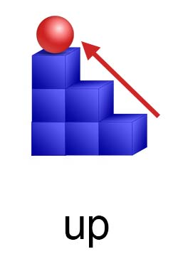
_stxEngl: _stxSbj:[The red ball] _stxVrb:{is rolling} _stxDirection:[(up) the blue stairs].
[https://www.englishpage.com/prepositions/direction_prepositions.htm]
name::
* McsEngl.up-space-direction,
* McsEngl.space-direction.up,
* McsEngl.up!~conjEngl:rlnDirectionUp,
* McsEngl.syntax.up!~conjEngl:rlnDirectionUp,
* McsEngl.syntax.conjEngl.up:rlnDirectionUp,
* McsEngl.syntax.rlnDirectionUp,
* McsEngl.rlnDirectionUp,
space.relative.direction.into
description::
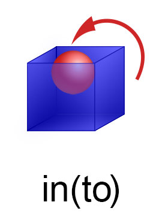
_stxEngl: _stxSbj:[The red ball] _stxVrb:{is bouncing} _stxDirection:[(into) the blue box].
· Sherry walked into the house. has object "the house"
· Sherry walked in. no object
[https://www.englishpage.com/prepositions/direction_prepositions.htm]
name::
* McsEngl.in-space-direction,
* McsEngl.into-space-direction,
* McsEngl.space-direction.in,
* McsEngl.in!~conjEngl:rlnDirectionInto,
* McsEngl.syntax.in!~conjEngl:rlnDirectionInto,
* McsEngl.syntax.conjEngl.in:rlnDirectionInto,
* McsEngl.space-direction.into,
* McsEngl.into!~conjEngl:rlnDirectionInto,
* McsEngl.syntax.into!~conjEngl:rlnDirectionInto,
* McsEngl.syntax.conjEngl.into:rlnDirectionInto,
* McsEngl.syntax.rlnDirectionInto,
* McsEngl.rlnDirectionInto,
space.relative.direction.out-of
description::
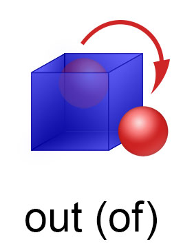
_stxEngl: _stxSbj:[The red ball] _stxVrb:{is bouncing} _stxDirection:[(out of) the blue box].
· Katie jumped out of the boat. has object "boat"
· Katie jumped out. no object
[https://www.englishpage.com/prepositions/direction_prepositions.htm]
name::
* McsEngl.out-of-space-direction,
* McsEngl.space-direction.out-of,
* McsEngl.out-of-conjEngl:rlnDirectionOutof,
* McsEngl.syntax.out-of-conjEngl:rlnDirectionOutof,
* McsEngl.syntax.conjEngl.out-of:rlnDirectionOutof,
* McsEngl.syntax.rlnDirectionOutof,
* McsEngl.rlnDirectionOutof,
space.relative.direction.off-of
description::
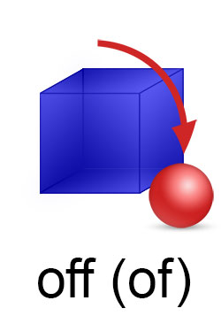
_stxEngl: _stxSbj:[The red ball] _stxVrb:[is rolling] _stxDirection:[(off of) the blue box].
[https://www.englishpage.com/prepositions/direction_prepositions.htm]
name::
* McsEngl.off-of-space-direction,
* McsEngl.space-direction.off-of,
* McsEngl.off-of-conjEngl:rlnDirectionOffof,
* McsEngl.syntax.off-of-conjEngl:rlnDirectionOffof,
* McsEngl.syntax.conjEngl.off-of:rlnDirectionOffof,
* McsEngl.syntax.rlnDirectionOffof,
* McsEngl.rlnDirectionOffof,
space.relative.direction.over
description::
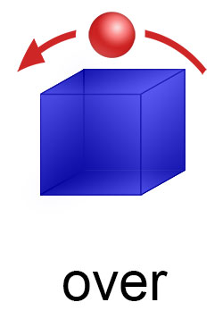
_stxEngl: _stxSbj:[The red ball] _stxVrb:{is bouncing} _stxDirection:[(over) the blue box].
[https://www.englishpage.com/prepositions/direction_prepositions.htm]
name::
* McsEngl.over-space-direction,
* McsEngl.space-direction.over,
* McsEngl.over!~conjEngl:rlnDirectionOver,
* McsEngl.syntax.over!~conjEngl:rlnDirectionOver,
* McsEngl.syntax.conjEngl.over:rlnDirectionOver,
* McsEngl.syntax.rlnDirectionOver,
* McsEngl.rlnDirectionOver,
space.relative.direction.under
description::
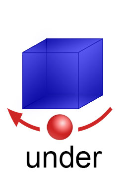
_stxEngl: _stxSbj:[The red ball] _stxVrb:[is rolling] _stxDirection:[(under) the blue box].
[https://www.englishpage.com/prepositions/direction_prepositions.htm]
name::
* McsEngl.under-space-direction,
* McsEngl.space-direction.under,
* McsEngl.under!~conjEngl:rlnDirectionUnder,
* McsEngl.syntax.under!~conjEngl:rlnDirectionUnder,
* McsEngl.syntax.conjEngl.under:rlnDirectionUnder,
* McsEngl.syntax.rlnDirectionUnder,
* McsEngl.rlnDirectionUnder,
space.relative.direction.against
description::
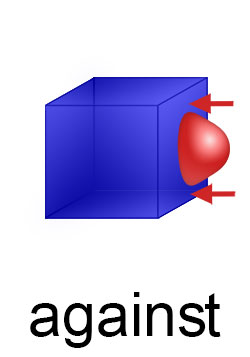
_stxEngl: _stxSbj:[The red ball] _stxVrb:{rolled} _stxDirection:[(against) the blue box].
[https://www.englishpage.com/prepositions/direction_prepositions.htm]
name::
* McsEngl.against-space-direction,
* McsEngl.space-direction.against,
* McsEngl.against!~conjEngl:rlnDirectionAgainst,
* McsEngl.syntax.against!~conjEngl:rlnDirectionAgainst,
* McsEngl.syntax.conjEngl.against:rlnDirectionAgainst,
* McsEngl.syntax.rlnDirectionAgainst,
* McsEngl.rlnDirectionAgainst,
space.relative.direction.around
description::
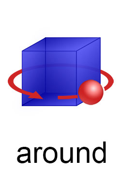
_stxEngl: _stxSbj:[The red ball] _stxVrb:{is rolling} _stxDirection:[(around) the blue box].
[https://www.englishpage.com/prepositions/direction_prepositions.htm]
name::
* McsEngl.around-space-direction,
* McsEngl.space-direction.around,
* McsEngl.around!~conjEngl:rlnDirectionAround,
* McsEngl.syntax.around!~conjEngl:rlnDirectionAround,
* McsEngl.syntax.conjEngl.around:rlnDirectionAround,
* McsEngl.syntax.rlnDirectionAround,
* McsEngl.rlnDirectionAround,
space.relative.direction.onto
description::

_stxEngl: _stxSbj:[The red ball] _stxVrb:{is bouncing} _stxDirection:[(onto) the blue box].
[https://www.englishpage.com/prepositions/direction_prepositions.htm]
name::
* McsEngl.onto-space-direction,
* McsEngl.space-direction.onto,
* McsEngl.onto!~conjEngl:rlnDirectionOnto,
* McsEngl.syntax.onto!~conjEngl:rlnDirectionOnto,
* McsEngl.syntax.conjEngl.onto:rlnDirectionOnto,
* McsEngl.syntax.rlnDirectionOnto,
* McsEngl.rlnDirectionOnto,
space.relative.direction.through
description::
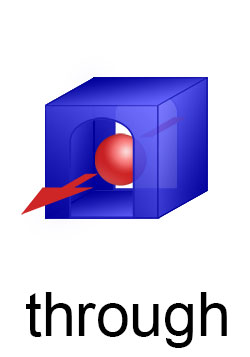
_stxEngl: _stxSbj:[The red ball] _stxVrb:{is rolling} _stxDirection:[[(through) the hole] [(in) the blue box]].
[https://www.englishpage.com/prepositions/direction_prepositions.htm]
name::
* McsEngl.through-space-direction,
* McsEngl.space-direction.through,
* McsEngl.through!~conjEngl:rlnDirectionThrough,
* McsEngl.syntax.through!~conjEngl:rlnDirectionThrough,
* McsEngl.syntax.conjEngl.through:rlnDirectionThrough,
* McsEngl.syntax.rlnDirectionThrough,
* McsEngl.rlnDirectionThrough,